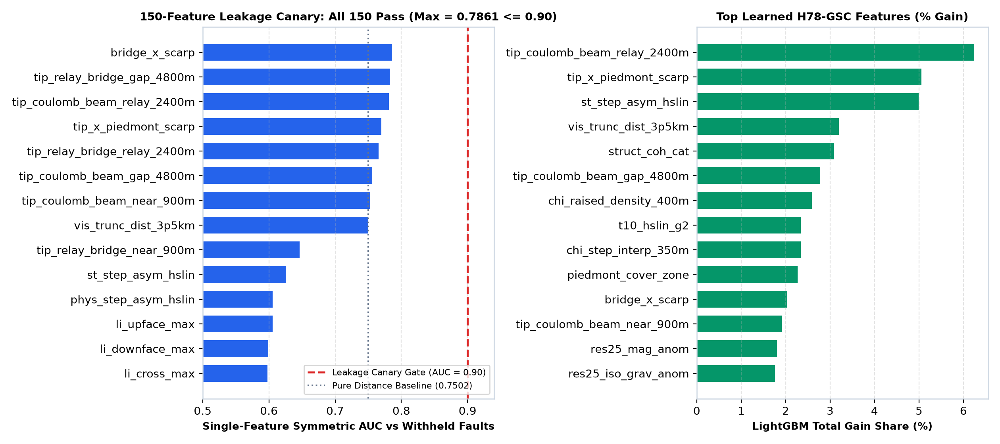

Geological Hypotheses & Multi-Physics Architecture
Five ranked, physically grounded fault-discovery hypotheses designed specifically to capture Quaternary piedmont scarps, en-echelon relay ramps, and blind basin-interior faults missing from USGS / INGENIOUS compilations.
Ranked Hypotheses, Physical Transforms & Non-Fault Mimics
| Rank & ID | Geological Target & Layers | Mathematical Transform | Named Non-Fault Mimic Process | Strict LOQO Verdict |
|---|---|---|---|---|
| #1 · H78-GSC-1 + GSC-4 | Buried Quaternary piedmont scarps · 1 m 3DEP LiDAR + seamless 10 m 3DEP + Quaternary cover | Strike-steered crest -H_nn + 0.35|H_tt - H_nn|, step asymmetry |g_n|/(g_t+0.02), two-stage PU spy cleaning on unlabeled piedmont scarps | Pleistocene Lake Lahontan / Bonneville shoreline strandlines & coalescing fan toes | PROMOTED (+0.0199 LOQO) |
| #2 · H78-GSC-2 | Unmapped 0.9–4.8 km en-echelon relay step-overs · Strictly fold-visible existing_faults.tif + hybrid physics strike | Vector endpoint tangent (u_x, u_y) + forward Coulomb stress cones + antiparallel paired facing-tip geometric mean sqrt(E_+ E_-) × scarp | Erosional canyon mouths truncating bedrock fault traces at range fronts | PROMOTED (#1 Gain 6.24%) |
| #3 · H78-GSC-3 | Active base-level fall across range fronts · 10 m USGS 3DEP DEM + piedmont mask | Fluvial steepness step chi_step_interp_350m & raised channel density chi_raised_density_400m | Differential lithologic resistance across welded tuffs / basalt caprocks | PROMOTED (#7 Gain 2.59%) |
| #4 · H78-GSC-5 | Blind basin-interior graben faults · Gravity, RTP magnetics (Band-6 tc fixed), MT resistivity, 3D ComCat, GeoDAWN springs | Domain-residual separation (2.5 km minus 12 km), zero-crossing tilt worms, 3D hypocentral shells, hydrothermal spring confluence | Pluton / caldera ring margins & aeromagnetic survey levelling seams | PROMOTED (+0.0175 LOQO) |
| #5 · H78-NoisyOR | Probabilistic tail union of structural & pure-physics heads | 1 - (1 - α p_mfnc)(1 - β p_phys) across α ∈ {0.45..0.88} | Tail amplification on volcanic mesa rims | Rejected vs Linear Blend (0.1798 vs 0.1866) |

0.78609 ≤ 0.90 gate; paired relay bridge + scarp outperforms pure distance 0.75023 by +0.0359). Right: Top learned LightGBM gain shares combining relay bridges, scarp crests, fluvial χ, and domain-residual potential fields.